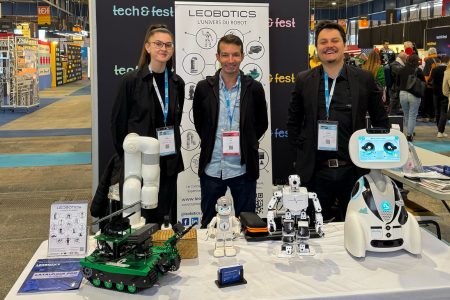

La robotique au service de tous les publics
Par O. Abdelwahd · Publié le 26 août 2025

Nous avons eu l’opportunité de nous entretenir avec Léo-Pol Watrin, fondateur et gérant de l'initiative pionnière Leobotics.
Dans le cadre de notre rubrique Parole de visionnaire, il partage sa visionun écosystème où industriels et particuliers se rencontrent, alliant innovation de pointe et usages concrets, pour rapprocher la robotique de tous.
Longtemps perçue comme un domaine réservé aux ingénieurs et aux grandes industries, la robotique s’ouvre progressivement à un public bien plus large. Santé, éducation, domotique ou encore divertissement : les robots ne sont plus seulement ces bras articulés en usine. Ils prennent désormais des formes multiples et investissent des sphères variées de la vie quotidienne.
Dans ce contexte d’élargissement des usages, certains projets visent à rendre la robotique plus lisible, plus concrète et surtout plus accessible. C’est notamment l’objectif de Leobotics, une structure lyonnaise fondée en 2021, qui associe plateforme en ligne et espace physique pour explorer toutes les facettes de la robotique contemporaine.
Plus qu'une plateforme, un écosystème
Cette équipe de passionnés propose un catalogue diversifié de robots : nettoyage professionnel pour supermarchés, téléprésence pour les EHPAD, assistance à la personne, éducation, ou encore accueil et sécurité. L’entreprise s’adresse à une pluralité de publics — particuliers, établissements de santé, enseignants, collectivités ou petites entreprises — en fournissant des solutions adaptées à chaque usage.
Leobotics accompagne aussi ses clients dans l’intégration concrète des équipements : démonstrations, paramétrages, installation, formation et maintenance. Un ensemble de services conçu pour lever les freins techniques encore fréquents à l’adoption de la robotique.
Au cœur de cet écosystème : une base de données en ligne, gratuite et accessible à tous. En 2025, elle recense plus de 1 800 références de robots, consultables via un moteur de recherche et un comparateur. L’objectif est clair : aider chacun, qu’il soit novice ou initié, à comprendre l’offre existante et à identifier des solutions adaptées à ses besoins. L’accent est mis sur la lisibilité de l’offre et la diversité des usages.
Comme l’explique l’équipe de Leobotics, la mission qui guide le projet depuis sa création demeure inchangée :
L’objectif initial de Leobotics reste le même : rendre accessible la robotique à tous. En ligne, grâce au plus grand comparateur de robots accessible gratuitement. Et de façon locale, à proximité de nos clients, aujourd’hui dans notre magasin physique à Lyon. Demain à Lille, Paris, Lausanne, Bruxelles…
Une vitrine pour la robotique
Grâce à sa visibilité croissante, la plateforme est devenue un point de contact stratégique pour de nombreux grands acteurs de la robotique, notamment français et européens. Elle leur permet de valoriser leurs produits et d’atteindre de nouveaux publics. Cette dynamique contribue au développement d’un tissu technologique local, en créant des passerelles entre industriels, institutions et utilisateurs finaux.
Dans ce contexte, une structure à taille humaine comme Leobotics peut jouer un rôle essentiel en accompagnant l’innovation locale et en rapprochant les technologies des utilisateurs.
« Les avantages de Leobotics, c'est notre proximité directe avec nos clients, avec le conseil par téléphone ou en magasin, avec des démonstrations de plus de 50 robots dans notre showroom à Lyon ou directement dans votre entreprise. Alors imaginez demain l’accompagnement possible avec une dizaine de magasins en France. Aujourd’hui, ce que nous recherchons, ce sont des robots performants, fonctionnels et surtout made in France. »
Un concept-store au cœur de Lyon
Pour compléter son dispositif numérique, Leobotics a ouvert un concept-store à Lyon, dans le quartier de la Confluence. Ce lieu est pensé comme un espace d’exploration : démonstrations de robots en action, ateliers pour enfants, formations pour enseignants, présentations à destination des professionnels — de santé notamment — ou des intégrateurs.
L’un des atouts du projet réside dans sa capacité à s’adresser à une grande variété de profils : parents et enfants venus découvrir des robots ludiques ou éducatifs, étudiants passionnés de programmation, seniors en quête d’outils d’assistance, entrepreneurs, éducateurs, ou encore professionnels en recherche de solutions concrètes. Chacun peut y trouver un angle d’entrée adapté à ses besoins et à son niveau de familiarité avec la technologie.
Avec le temps, les retours des visiteurs témoignent d’une curiosité croissante et d’une évolution des attentes.
« Les visiteurs sont de plus en plus curieux, c’est clair. Un nouvel intérêt débute doucement vers les robots humanoïdes, un marché et des besoins encore à consolider. La clientèle de Leobotics est toujours diversifiée, et les demandes restent bien réparties, principalement entre robots de nettoyage pour les grandes surfaces — un marché qui explose ces dernières années —, des robots industriels collaboratifs avec de plus en plus de demandes chez les start-ups et TPE, des robots d’assistance à la personne que l’on recherche de préférence made in France, et enfin l’Éducation nationale et les écoles d’ingénieurs qui investissent toujours autant dans la robotique éducative. »
Vers une robotique à visage humain
Dans un paysage où les robots investissent peu à peu les foyers, les écoles, les hôpitaux et les entreprises, Leobotics propose un véritable univers à explorer. Une porte d’entrée claire, pédagogique et concrète vers une robotique à visée humaine. L’équipe a très tôt perçu les bénéfices que pouvaient apporter ces technologies en contribuant à recréer du lien social, notamment auprès de personnes en situation de difficulté, de fragilité ou d’isolement.
« On observe chez Leobotics une demande croissante de robots de télécommunication pour les personnes isolées, une attractivité grandissante de robots d’assistance à la personne avec une communication directe possible grâce à l’apparition des différentes IA, en plus des besoins constants dans le domaine du handicap. »
En 2025, Leobotics poursuit son développement avec de nouveaux services et de nouveaux défis : formations certifiées, accompagnement technique, conseils à l’intégration de robots dans des environnements professionnels ou domestiques, et un second magasin fin 2025.
Après une refonte de notre site Internet et de nos outils internes dans le but d’être encore plus réactifs avec nos clients, nous prévoyons d’ouvrir notre second showroom à Lille d’ici 2025, ainsi qu’une nouvelle levée de fonds en 2026. Information exclusive — avis aux passionnés de robotique et futurs investisseurs !
.jpeg)